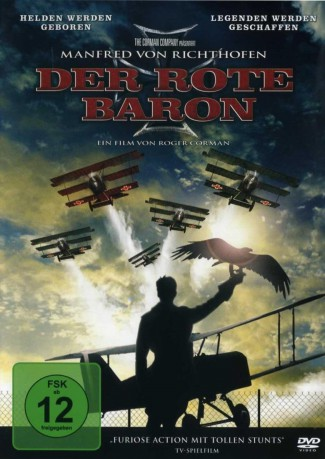

#7031 Manfred von Richthofen - Der Rote Baron
Alternativ: Von Richthofen and Brown
 
 IMDB-Wertung: 5.9 / 10
IMDB-Wertung: 5.9 / 10  Metascore: 0
Metascore: 0 
Manfred von Richthofen avanciert im Ersten Weltkrieg zum erfolgreichsten deutschen Jagdflieger. Er läßt seinen Dreidecker rot lackieren und wird deshalb alsbald bei freund und Feind als "roter Baron" bekannt. Der junge Kanadier Roy Brown wagt dennoch den Zweikampf mit der fliegenden Legende.
Jahr: 1971
Dauer: 96 Minuten
FSK: 12
Land: USA Studio: United ArtistsTonspuren:
Untertitel:
Auflösung: 1080p (1920x1040) Größe: 8949 MB
Genre: Action, Drama, Krieg, Geschichte, Biographie
Regisseur:  Roger Corman
Roger Corman
Drehbuch: John William Corrington
Soundtrack:
Darsteller:
- John Phillip Law als Baron Manfred von Richthofen
 Don Stroud als Roy Brown
Don Stroud als Roy Brown Barry Primus als Hermann Goering
Barry Primus als Hermann Goering Corin Redgrave als Major Lanoe Hawker VC
Corin Redgrave als Major Lanoe Hawker VC- Hurd Hatfield als Anthony Fokker
 Stephen McHattie als Werner Voss
Stephen McHattie als Werner Voss- Robert La Tourneaux als Ernest Udet
- Peter Masterson als Major Oswald Boelke
- Tom Adams als Owen
 Ferdy Mayne als Richthofen's father
Ferdy Mayne als Richthofen's father- David Weston als Murphy
- George Armitage als Wolff
- Shane Briant als German Pilot
- Karen Ericson als Ilse
- Brian Foley als Lothar von Richthofen
- Clint Kimbrough als Major von Höppner
- John Flanagan als Thompson
- Lorraine Rainer als French girl in the woods
- Brian Sturdivant als May
- Maureen Cusack als Richthofen's mother
- Gordon Phillips als Cargonico
- David Osterhout als Holzapfel
- Seamus Forde als Kaiser
- Fred Johnson als Jeweler
- Des Nealon als British Intelligence Officer
- Emmet Bergin als
- Julie Corman als Rear gunner on plane attacking German airbase , uncredited
- Michael Fahey als Richthofen at Age 3 , uncredited
- Vernon Hayden als Trackl , uncredited
- Peadar Lamb als German Staff Major , uncredited
- Patrick McLarnon als German Officer , uncredited
Datei: X:\1971\Manfred von Richthofen - Der Rote Baron (1971, FSK12, 1920x1040).mkv seit 18.09.2017
Festplatte: HD 1971-1979
 Es gibt insgesamt 28 Filme in der Gruppe '1971'
Es gibt insgesamt 28 Filme in der Gruppe '1971'